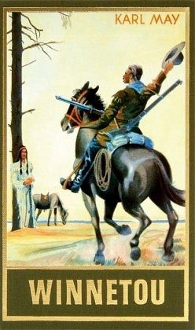
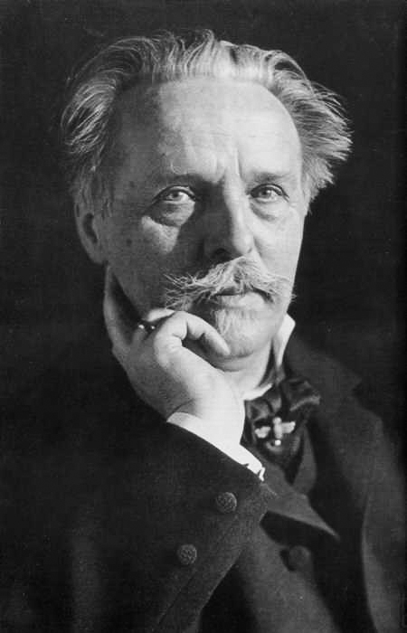

Introduction:
In March of 1933, the Nazis began burning books in Germany in an attempt to censor authors whose beliefs contradicted those of their party. Any piece of literature written by "leftists," Democrats, or Jewish people were given high priority for burning. However, one author, who portrayed people of color in a positive light, pushing for racial equality and anti-colonialism, was hardly censored. Karl May, one of Germany's most well-known authors, was lucky enough to have written one of Adolf Hitler's favorite novels (Sammons 241), allowing his messages to continue to reach the German people. Karl May is most well-known for his novel series, Winnetou, which takes place in the American-West, following the adventures of an Apache man and a German immigrant. Since he first published a novel featuring his Apache character, Winnetou, in 1875, Karl May has been a household name in Germany and a beloved author of literature that appeals to all age groups.
May is an example of how literature cannot only influence the minds of children but also reflect general societal mindsets and beliefs during the time in which it was written. Winnetou has entertained people of all ages for well over a century, inspiring readers to be more adventurous, like the series' main characters and motivating them to educate themselves on other cultures. However, fans of Karl May often unintentionally appropriate and continue inaccurate ideas and assumptions towards Native American culture. The Karl May Association, which holds annual festivals in the author's honor, is an example of this. Karl May Festivals, or Karl May "Fests," include open-air performances, in which method actors from his fan groups, who often convince themselves that they are Native American, furthering racial stereotypes, reenact scenes from May's novels. While these performances and festivals, put on by May's following, are well intended and meant to celebrate literature and educate people, they still continue to further racist ideas and assumptions that are overall offensive and harmful towards Native American culture.
Background:
Karl May, born in 1842, is one of Germany's best-selling authors, even over a century after his death, and is most known for his American-based adventure series, Winnetou. May grew up in poverty, coming from a family in which nine of his thirteen siblings died during infancy (Koblick 1). His father valued literacy and, in spite of the family's need for May to work and bring in money, insisted that his son get a formal education. Because May was fortunate enough to get an education, he was able to learn the skills that would later be necessary for his career as an author, such as reading and writing. As he got older, Karl May began training to work as a teacher, which was his "dream job" (Koblick 2). However, this dream ended when May was fired for stealing candles from his employer, which were intended to be a birthday gift for his sister (Koblick 3). When May was thirty-seven, he was arrested for impersonating a detective, which was a common pastime for the author, who frequently role-played as figures of authority (Sammons 234). As a result of the actions which placed him in prison, May "has been viewed psychoanalytically as one of profound narcissism" (Sammons 234). May's incessant lying and fabricating cannot only be seen in the life which he led but the novels that he wrote as well, in which he referenced copious amounts of false information regarding Native Americans. While he was in prison, May indulged in his passion: writing. He wrote a series of adventure novels, which took place in Asia and the Middle East, causing him to gain popularity as an author once they were published after his release from prison. In 1875, May wrote his first novel featuring his beloved character, Winnetou, titled Old Firehand. By 1895, over 100,000 copies of his novels had been sold, and Karl May was finally making a decent living, earning roughly 60,000 Deutschmarks per year (Koblick 3).
Winnetou is May's most famous series, consisting of over twenty novels. The series focuses on the adventures and companionship between the two main characters, Winnetou, an Apache man, and Old Shatterhand, a German immigrant, furthering themes of Christianity and fellowship. May wrote his novels to have "a perception of Indian tribes, their daily lives, rituals, myths, and, above all, their fights against the white intruder" (Feilitzsch 176), envisioning his work as an homage to Indigenous people. He wrote the Winnetou series as, in his words, ‘a memorial to the red race'" (King 6), condemning Americans and British colonists for the harm they caused for Native Americans. While May wrote his novels to comment on the negative effects of imperialism and racial inequality, his novels furthered harmful stereotypes towards Native American people and created unrealistic ideas for what their culture was like.
Since his portrayal of Native American life is highly inaccurate and unrealistic in his novels, historians have difficulty determining whether or not May ever actually visited North America, or at least interacted with Native Americans, before writing these novels. As a result, controversy regarding the legitimacy of Karl May's visits to the United States during the 1800s stems from these rampant inaccuracies in his work (King 6). May appears to have limited knowledge of Native American tribes and their dynamics based on how he portrays them in his novels. While he specifies what tribe Winnetou is from, in his novels, "Native cultures from across the continent are combined in a colorful mash-up, including Winnetou's Mescalero Apache community living in pueblos and using totem poles as torture stakes" (King 7). His misunderstanding of Apache culture shows that he likely either did not visit America prior to writing these novels or did not, at least, interact with people from an Apache tribe, like he claimed that he did (Koblick 5). In order to prove that he had, in fact, visited North America, particularly the American West, before writing these novels, Karl May always wore a necklace of bear teeth, claiming that they were from an American bear that he had killed (Koblick 3).
Indianthusiasm:
Indianertürmeli, or "Indianthusiasm," is a subculture that obsesses over Aborigines groups, particularly Native Americans, and their cultural practices. Indianthusiasts romanticize all aspects of Native American culture. They "refer to Indianness...as [a] cultural ethnic identity that ossifies into stereotype" (King 3), perpetuating harmful and racist stereotypes and ideas. Indianthusiasm has been prominent in Germany since the late 1800s as a result of Karl May's portrayal of the Apache people. Indianthusiasts began forming social groups shortly after the first World War, and the number of groups continued to grow well after World War II. These groups allow avid Karl May fans, and general Native American enthusiasts, to meet people with similar interests, discuss May's work, and appropriate Native culture. These enthusiasts often adopt Native American culture, often in ways which can be harmful towards Aboriginal people:
Their members immerse themselves in various aspects of Aboriginal culture by developing practical skills and in-depth cultural knowledge, organizing powwows and sweat lodges in their leisure time (Deutschlander 39).
German Indianthusiast's immersion in Native American culture matches the definition of cultural appropriation. Cultural Appropriation, a negative aspect of Indianthusiasm, is "taking or using things from a culture that is not your own, especially without showing...respect [for] the culture" (“Cultural Appropriation”). Karl May fans, and Indianthusiasts in general, often steal or appropriate Native American culture. As mentioned earlier, German Indianthusiasts often put on their own powwows in attempt to replicate those put on by certain Native American groups (Deutschlander 39). These actions are problematic in that powwows are sacred to many Native American groups, and replicating them is sacrilegious and disrespectful. Cultural appropriation is also harmful to Native Americans in that it can further inaccurate and potentially harmful stereotypes regarding their lifestyles.
While Indianthusiasm can be harmful towards Native Americans in that it promotes cultural appropriation, this phenomenon can benefit certain Aborigines groups. For example, an increased interest in Aboriginal culture among German-speaking people increases tourism within those Native communities, benefiting them monetarily. While the overall attendance of non-North American tourists on Native American reservations and to Native American functions is low, "the German component is relatively high and keeps increasing, especially at the more remote sites, such as culture camps on reserves" (Deutschlander 5). This increasing appearance of German tourists in Native American areas benefits Aboriginal communities, which are often already marginalized financially.
Karl May Fests:
Indianthusiasm can be most commonly seen at Karl May Fests, the annual open-air festivals directed by the Karl May Association. The Karl May Association was founded in 1969 in order to promote the consumption and analyzation of May's work (King 4). Karl May Fests display the values of this association and educate attendees on Karl May's work, as well as Native American culture and American history. Karl May Fests occur in the Summer, allowing attendees to view reenactments of scenes from May's American-West adventure novels, dress up as "cowboys and Indians," and enjoy American food. Many people who grow up in German-speaking countries "have visited these events or have at least heard about them," and have seen "professional or amateur theatrical dramatizations of [May's] Wild West stories...on open-air stages and surrounded by festival activities" (Webber 4). Karl May Fests have a vast influence on the German people, as well as people from other German-speaking cultures, and is a major aspect of German popular culture. However, while they promote literacy and education on other cultures, these festivals further the inaccuracies about Native Americans found in Karl May's work.
In portraying Native Americans in his work, Karl May blends Native American and German culture together, depicting a non-existent hybrid culture. He mixes these cultures together in that the Native Americans in his novels possessed German values, often practicing Christianity, acting like German people in general, all while still fitting the stereotypical beliefs that the German people had towards them (Webber 10-11). The most prominent, heroic, Native American characters in these novels "tend to have Caucasian features" (Sammons 238), which also have caused German people to sympathize more with these characters and have inaccurate ideas towards American Indian life. For example, Winnetou, the main character of May's novel series, is specifically described as "[not having] protruding cheekbones nor slanted eyes," and his daughter "looks European and ‘Greek'" (Webber 84). May explicitly describing his most important Native American characters as having Caucasian features was integral in allowing Winnetou to become popular among Germans and also gives insight to the author's own prejudices against American Indians.
The main character, Winnetou, also begins the series as a "noble savage" that "disliked Indian ‘superstitions' and...searched for ‘religious' values" (Webber 9), which increased his likability among the people in Germany, a country which was predominantly Christian at the time of Winnetou's publication. This cultural blend aided May's novels, especially the Winnetou series, in gaining popularity. At the time of publication, German people were more able to relate to the Native American characters because May designed them to possess German traits and values. As a result of this hybridity, Karl May Fests promote a culture that is significantly different from actual Native American culture. The practices within Karl May Fests, including the dramatizations of his work and "educational" presentations on Native culture: consist [of] the adoption of ‘non-German' themes of the Wild West and the ‘Indians' into German-speaking cultures…[which] also reveals...the effects of...their "Indian" stereotypes and Wild West narratives have long become a constituent part of German-speaking cultures (Webber 10-11).
While the Winnetou series attempts to portray Native Americans positively, it not only promotes inaccurate ideas and claims regarding American Indians but also furthers stereotypes regarding their culture. May also, in spite of pushing for anti-colonialism and portraying Native Americans positively, exhibited in his writing that he believed "that the Indian way of life must change, culturally and even biologically" (Weber 54). May displays this belief throughout his novels. For example, Winnetou converts to Christianity, changing his culture and lifestyle in such a way that Karl May believed was better and necessary for Native Americans to have better lives (cite). Karl May provides his audience with very opinionated descriptions of Native American spirituality when educating them on their culture and beliefs. As Katja Richter writes in their dissertation on May's portrayal of American Indians, "on the one hand, the narrator praises the natives' religiosity, on the other, he often refers to their beliefs as superstition" (Weber 57).
Native American Stereotypes and Performances at Karl May Fests:
The dramatizations of scenes from Winnetou show that Karl May's characters, as well as majority of German people's perceptions of Native Americans are heavily based on racist stereotypes. The characters portrayed in these performances are "clichéd ‘Indian' figures" whose "core story [consists] of blood-brotherhood between the German scout Old Shatterhand and the Apache Chief Winnetou" (Weber 20) and their portrayal heavily relies on the stereotypes often found in May's novels. This stereotypical, cliche, representation harms Native Americans--these performances create a character of American Indians, alienating them from European people and dehumanizing them (Weber 25). In their dissertation on the portrayal of Native Americans on German stage, Alina Weber lists off several examples of American Indian stereotypes often seen at Karl May Fests, including, "‘The Noble Redman'... the ‘Red Savage'... the ‘vanishing' [Native American]... [and] the ‘Virgin-Whore Paradox'" (Weber 25-26). May's work, film adaptations of his work, and performances at Karl May Fests each exhibit stereotypes. For example, in Winnetou I, Karl May begins the novel by describing, and romanticizing, the mass deaths of Native American people as a result of globalization, furthering the ‘vanishing Native American' stereotype. May writes "Alas, the red race is dying! From the Land of Fire to far above the Great Lakes… struck down by a pitless fate, a destiny inexorable...his... frame signaling the imminence of death" (May 1). While the demise of millions of Native Americans did occur as a result of globalization in North America, Karl May's depiction of American Indians continues the idea that they grew to be increasingly defenseless, that their deaths were inevitable, and that they will continue to ‘vanish' for these reasons. Karl May shows this when he writes "the Indian is terminally ill, we stand by his deathbed, waiting to close the lids over his eyes" (May 2), after describing the causes of death for many Native Americans as a result of colonization in the United States. As described earlier, the character Winnetou represents the ‘Noble Red Man' stereotype. Winnetou fits this stereotype because he is heroic and is friends with the ‘Noble White Man,' who converts him to Christianity. This stereotype is harmful in that it furthers the idea that Winnetou is superior to other Native Americans because he succumbs to "White" and German influence.
May's Influence on Germany and the Views of German People:
Many German-speaking people are introduced to Karl May and his work as children. Children are exposed to various Native-themed forms of entertainment and activities, such as "children's books and cartoons...televised reruns of Karl May–based westerns...tipis at summer camp, [and] dressing up as an Indian for carnival or for a Karl May reenactment" (King 13), integrating May into the lives of Germans while they are very young. This early orientation into May's aspect of German popular culture allows for a multigenerational fanbase and for his novels to reach a larger amount of people. The appropriation of Native American cultures generally begins at a very young age, and as a result, German people, at least when they are children, do not realize that what they are doing is wrong. The love of Karl May's work has and continues to be passed down from generation to generation. The literature children consume not only reflects the societal values and beliefs at the time at which said literature was written but "it can contribute to sketching the horizons that determined the public's understanding of the issues and of other, perhaps more complex treatments of the topic" (Krobb 2). Assessing May's work shows why German-speaking people continue to possess the beliefs that they do regarding Native American culture and American imperialism over 100 years after the publication of the Winnetou series.
Conclusion:
Karl May's American West novels have been highly popular in Germany since their publication in the late 1800s. Because the Western-themed fantasies featured in his novels are so deeply ingrained in German society and are often introduced to children at young ages, May's Winnetou series continues to hold it's popularity today, nearly 100 years after the author's death. Karl May's popularity has led to the development of Indianthusiasm in Germany, which causes people to obsess over Native American culture and perpetuate inaccuracies and racist ideas regarding Native Americans featured in his novels. Indianthusiasm, as caused by May's work, is harmful to Native Americans in that this phenomenon leads to the appropriation of their culture. This appropriation is most commonly seen at Karl May Fests, in which actors in dramatizations of his novels and festival goers alike dress up as Native Americans, ultimately treating their entire race and culture as a costume. While these performances are meant to celebrate German literature and educate people on Native American culture, the Karl May Association fails to acknowledge that many of the themes featured in the scenes that they perform bolster the continuation of racist stereotypes and false information. Not only are the reenactments of May's novels often problematic, but the "mock-powwows" put on by avid Karl May fans are also damaging in that they are sacrilegious. While the people of Germany, especially fans of May, recognize that the British colonization in America and American Westward expansion was very harmful to Native Americans, the lack an understanding of the issues that come with stealing Native American culture and practices.
Bibliography
“Cultural Appropriation.” Def. 1. Cambridge Dictionary. Web. 7 May 2019. Deutschlander, Siegrid. In Search of Winnetou: Constructing Aboriginal Culture in the Tourist Encounter (2006): ProQuest Dissertations and Theses. Web.
Feilitzsch, Heribert Frhr.v. "Karl May: The "Wild West" as Seen in Germany. (German Writer's Travel Novels of the American Southwest)." Journal of Popular Culture 27.3 (1993): 173. Web.
King, Lisa Michelle. "Revisiting Winnetou: The Karl May Museum, Cultural Appropriation, and Indigenous Self-Representation." Studies in American Indian Literatures, vol. 28 no. 2, 2016, pp. 25-55. Project MUSE, muse.jhu.edu/article/628637.
Koblick, David. “Foreword.” Winnetou, by Karl May, Washington State University Press, 1999, pp. 1–6.
Krobb, Florian. "Family Reunions in German Adventure Literature on Africa of the 1880S – A Vision for Colonial Intervention: Karl Burmann AND Karl May." German Life and Letters 67.3 (2014): 301-19. Web.
Sammons, Jeffrey L. Ideology, Mimesis, Fantasy : Charles Sealsfield, Friedrich Gerstèacker, Karl May, and Other German Novelists of America. Chapel Hill, N.C.: U of North Carolina, 1998. Print. University of North Carolina Studies in the Germanic Languages and Literatures ; No. 121.
Weber, Alina, Chaouli, Michel, Stoeltje, Beverly, Bauman, Richard, Breger, Claudia, Shorter, David, and Weiner, Marc. “Indians” on German Stages: The History and Meaning of Karl May Festivals (2010): ProQuest Dissertations and Theses. Web.
Addendum
For this project, I added larger margins to the css document so that the text of this essay wouldn't be spread across the entire page and it would look a little nicer. I also changed the background of the page to a light blue-grey, because I wanted to add a little color and I thought it'd be less straining on the eyes. To spice things up, I also added some pictures to this essay :)